Exposure to environmental factors is a major determinant of health and disease. The exposome is a term that represents the totality of environmental exposures (or in practical terms, the integrated compilation of all physical, chemical, biological, and (psycho)social influences that impact biology) from conception to death, that drive disease and overall health (Miller & Banbury Exposomics Consortium, 2025; Wild, 2005). Characterizing the relationship between a multiplicity of exposures and disease outcomes can be a daunting task. Epidemiological studies have moved towards exposure-wide association studies (ExWAS) where sets of exposures are associated with an outcome (Chung et al., 2024). The advent of high-throughput technologies has enabled profiling of several layers of biological information. These layers can also be integrated to better understand the relationship between exposures and disease outcomes.
The tidyexposomics package is designed to facilitate the
integration of exposure and omics data to identify exposure-omics
associations and their relevance to health outcomes. We structure our
commands to fit into the tidyverse framework, with a
simple, intuitive interface. Here we provide functionality to perform
quality control, sample and exposure association analysis, differential
abundance analysis, multi-omics integration, and functional enrichment
analysis.
tidyexposomics pipeline overview.Exposure and omics data are stored in a MultiAssayExperiment. Data then undergoes quality control, sample and exposure associations, differential abundance analysis, multi-omics integration, and functional enrichment analysis. The pipeline is designed to be flexible and modular, allowing users to customize their analysis.
Installation
# install the current development version
remotes::install_github("BioNomad/tidyexposomics")
# load the package
library(tidyexposomics)Command Structure
To make the package more user-friendly, we have named our functions to be more intuitive. For example, we use the following naming conventions:
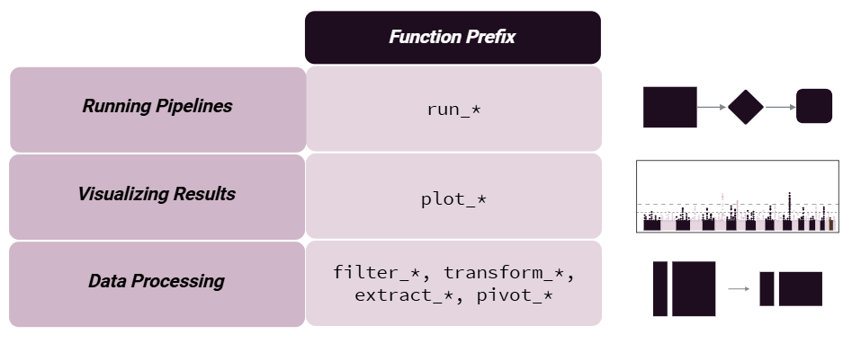
We provide functionality to either add results to the existing object
storing the omics/exposure data or to return results directly using
action = "get". We suggest adding results, given that
pipeline steps are tracked and can be output to the R console, plotted
as a workflow diagram, or exported to an Excel worksheet.
Exposure Metadata and Ontology Annotation
Codebook Setup
Before starting an exposomics data analysis we recommend having a codebook, with information on your exposure variables. Some suggestions:
Variable Name: The name of the variable in the data set.
Variable Description: A concise description of what the variable measures, including units (e.g., “urinary bisphenol A (ng/mL)”).
Variable Type: The type of variable, such as continuous, categorical, or binary.
Variable Period: The period of time over which the variable was measured, such as “lifetime”, “year”, “month”, or “day”.
Variable Location: The location where the variable was measured, such as “home”, “work”, “school”, or “geospatial code”.
Variable Ontology: The ontology term associated with the variable.
Ontology Choices
Variables captured in the codebook should be annotated with ontology terms to provide a standardized vocabulary for the variables. We recommend using the following ontologies for exposure and outcome variables:
Environment Exposure Ontology to annotate your exposure variables.
Human Phenotype Ontology to annotate your outcome variables and phenotypic data.
Chemical Entities of Biological Interest to annotate your chemical exposure variables.
Why annotate with ontologies?
Interpretability: Ontology labels clarify ambiguous or inconsistently named variables.
Harmonization: You can compare and combine variables across datasets when they map to the same term.
Grouping: Ontologies allow you to collapse fine-grained exposures into broader categories.
Integration: Many public tools, knowledge graphs, and repositories are ontology-aware. This can make your results more interoperable and reusable.
Ontology Annotation App
To help annotate exposure variables, we provide a lightweight shiny app:
# Launch the shiny app to annotate exposure variables
ont_annot_app()To use the app:
Click Browse to select your exposure metadata file.
Then you can click the variable you’d like to link to an annotation term and search in the Choose Ontology Term dropdown.
After you select a term, you will see a short description of the term.
After you are done, click Apply Annotate to save the annotation.
Now you can group exposures into larger categories by selecting each line and then choose your ontology and root depth level (where a lower number means a more general term).
Then you can click Apply Categorization to apply the selected categorization to the selected rows.
If the ontology has nothing to do with your variable, you may manually enter a category in the Category column. This will change the Category Source to manual and will not be linked to the ontology.
Once you have annotated all your variables click Download Annotated CSV to save the annotated metadata file.
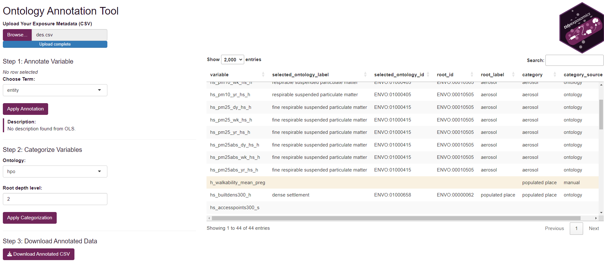
Loading Data
To get started we need to load the data. The
create_exposomicset function is used to create a
MultiAssayExperiment object that contains exposure and
omics data. As a quick introduction, a MultiAssayExperiment
object is a container for storing multiple assays (e.g., omics data) and
their associated metadata:
Overview of the MultiAssayExperiment Object Structure. Subject level data is captured within the colData of the MultiAssayExperiment. Observations are stored within experiments slots in the MultiAssayExperiment and sampleMap is used to link the data ( (MultiAssay Special Interest Group, 2025) ).
We use the MultiAssayExperiment object to store the exposure and omics data. The create_expomicset function has several arguments:
The codebook argument is a data frame that contains information about the variables in the exposure metadata. The column names must contain variable where the values are the column names of the exposure data frame, and category which contains general categories for the variable names. This is the data frame you created with the ontology annotation app!
The exposure argument is a data frame that contains the exposure and other metadata.
The omics argument is a list of data frames that contain the omics data.
The row_data argument is a list of data frames that contain information about the rows of each omics data frame.
We are going to start by loading in example data pulled from the ISGlobal Exposome Data Challenge 2021 (Maitre et al., 2022). Specifically, we will examine how exposures and omics features relate to asthma status.
# Load Libraries
library(tidyverse)
library(tidyexposomics)
# Load the example data
load_example_data()
# Create the expomicset object
expom <- create_exposomicset(
codebook = annotated_cb,
exposure = meta,
omics = omics_list,
row_data = fdata
)In this tutorial we will focus on asthma patients with a lower socioeconomic status (SES):
# Keeping only samples with asthma status
expom <- expom[, !is.na(expom$hs_asthma)]
expom_1 <- expom[, expom$FAS_cat_None %in% c("Low")]
rm(expom)We are interested in how the exposome affects health outcomes, so let’s define which metadata variables represent exposure variables.
# Grab exposure variables
exp_vars <- annotated_cb |>
filter(category %in% c(
"exposure to oxygen molecular entity",
"aerosol",
"environmental zone",
"main group molecular entity",
"transition element molecular entity",
"exposure to environmental process",
"polyatomic entity"
)) |>
pull(variable) |>
as.character()Quality Control
Missingness
Oftentimes when collecting data, there are missing values. Let’s use
the plot_missing function to determine where our missing
values are
expom_1 |>
plot_missing(
plot_type = "summary",
threshold = 0
)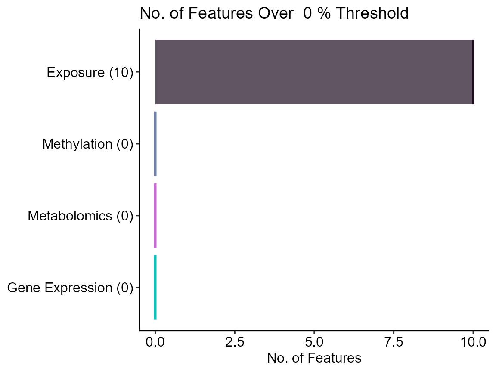
Here we see that there are 10 variables in the exposure data that are missing data. Let’s take a look at them:
expom_1 |>
plot_missing(
plot_type = "lollipop",
threshold = 0,
layers = "Exposure"
)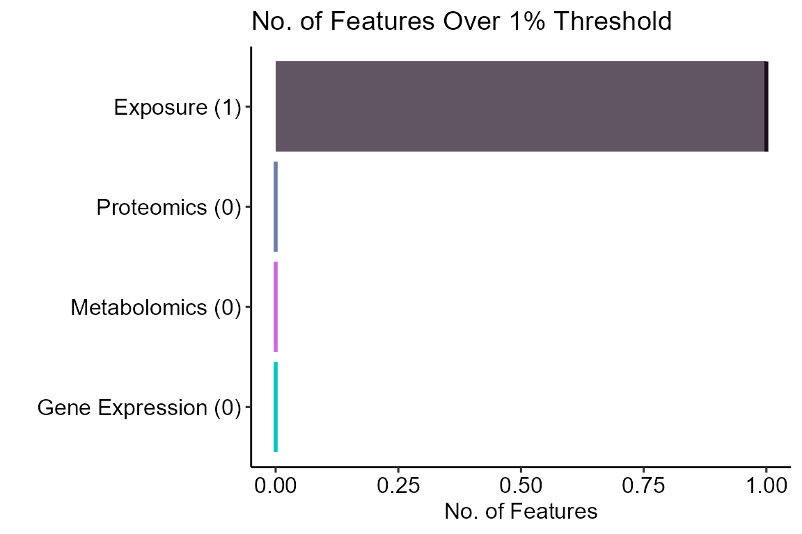
Here we see that one variable, hs_wgtgain_None, has
nearly 30% missing values! We can apply a missingness filter using the
filter_missing function. The na_thresh
argument is used to set the threshold for missing values. For example,
if na_thresh = 20, then any variable with more than 20%
missing values will be removed. Here we set the threshold to 5% to
filter out variables with more than 5% missing values.
# Filter out variables with too many missing values
expom_1 <- expom_1 |>
filter_missing(na_thresh = 5)Imputation
Now that we have filtered out the variables with too many missing
values, we can impute the missing values. The
run_impute_missing function is used to impute missing
values. Here we can specify the imputation method for exposure and omics
data separately.
The exposure_impute_method argument is used to set the
imputation method for exposure data, and the
omics_impute_method argument is used to set the imputation
method for omics data. The omics_to_impute argument is used
to specify which omics data to impute. Here we will impute the exposure
data given using the missforest method, but other options
for imputation methods include:
median: Imputes missing values with the median of the variable.mean: Imputes missing values with the mean of the variable.knn: Uses k-nearest neighbors to impute missing values.mice: Uses the Multivariate Imputation by Chained Equations (MICE) method to impute missing values.dep: Uses the DEP method to impute missing values.missforest: Uses the MissForest method to impute missing values.lod_sqrt2: Imputes missing values using the square root of the lower limit of detection (LOD) for each variable. This is useful for variables that have a lower limit of detection, such as chemical exposures.
# Impute missing values
expom_1 <- expom_1 |>
run_impute_missing(
exposure_impute_method = "missforest"
)Filtering Omics Features
We can filter omics features based on variance or expression levels.
The filter_omics function is used to filter omics features.
The method argument is used to set the method for filtering. Here we can
use either:
Variance: Filters features based on variance. We recommend this for omics based on continuous measurements, such as log-transformed counts, M-values, protein intensities, or metabolite concentrations.
Expression: Filters features based on expression levels. We recommend this for omics where many values may be near-zero or zero, such as RNA-seq data.
The assays argument is used to specify which omics data
to filter. The assay_name argument is used to specify which
assay to filter. The min_var, min_value, and
min_prop arguments are used to set the minimum variance,
minimum expression value, and minimum proportion of samples exceeding
the minimum value, respectively.
# filter omics layers by variance and expression
expom_1 <- expom_1 |>
filter_omics(
method = "variance",
assays = "Methylation",
assay_name = 1,
min_var = 0.05
) |>
filter_omics(
method = "variance",
assays = "Metabolomics",
assay_name = 1,
min_var = 0.1
) |>
filter_omics(
method = "expression",
assays = "Gene Expression",
assay_name = 1,
min_value = 1,
min_prop = 0.3
)Normality Check
When determining variable associations, it is important to check the
normality of the data. The run_normality_check function is
used to check the normality of the data.
The transform_exposure function is used to transform the
data to make it more normal. Here the transform_method is set to
boxcox_best as it will automatically select the best
transformation method based on the data. The
transform_method can be manually set to log2,
sqrt, or x_1_3 as well. We specify the
exposure_cols argument to set the columns to transform.
# Check variable normality & transform variables
expom_1 <- expom_1 |>
# Check variable normality
run_normality_check(action = "add") |>
# Transform variables
transform_exposure(
transform_method = "boxcox_best",
exposure_cols = exp_vars
)To check the normality of the exposure data, we can use the
plot_normality_summary function. This function plots the
normality of the data before and after transformation. The
transformed argument is set to TRUE to plot
the normality status of the transformed data.
expom_1 |>
plot_normality_summary(
transformed = TRUE
)
Principal Component Analysis
To identify the spread of the data, we can perform a principal
component analysis (PCA). The run_pca function is used to
perform PCA on samples with observations in each omics data frame. Here
we specify that we would like to log-transform the exposure and omics
data before performing PCA using the log_trans_exp and the
log_trans_omics arguments, respectively. We automatically
identify sample outliers based on the Mahalanobis distance, a measure of
the distance between a point and a distribution.
# Perform principal component analysis
expom_1 <- expom_1 |>
run_pca(
log_trans_exp = TRUE,
log_trans_omics = TRUE,
action = "add"
)
# Plot principal component analysis results
expom_1 |>
plot_pca()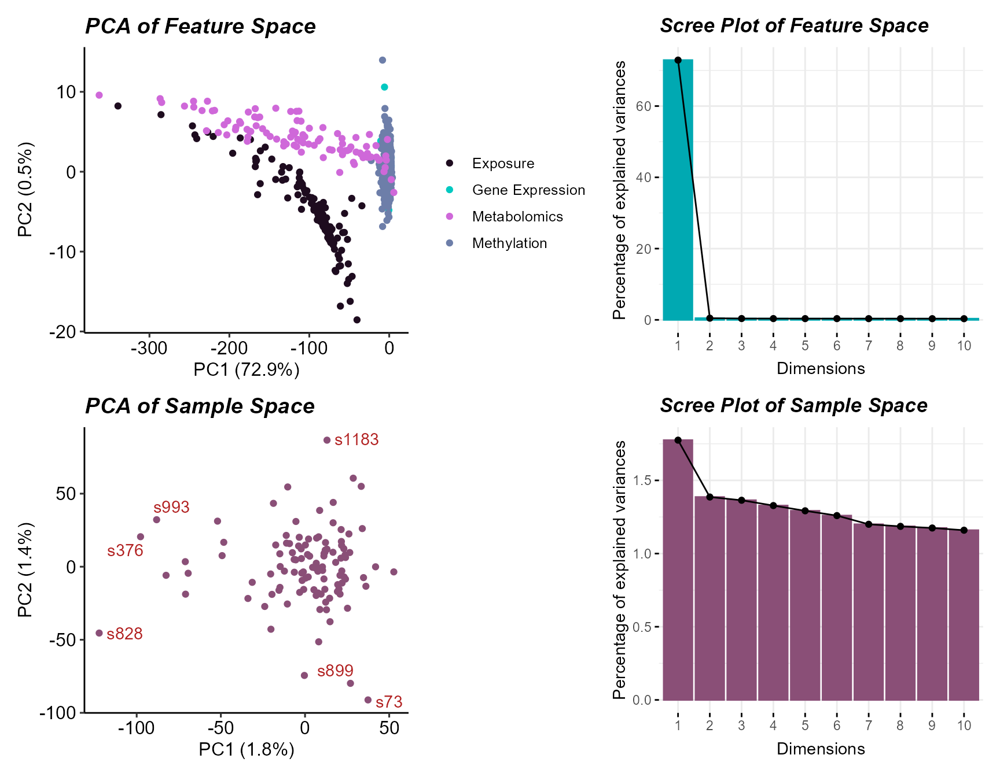
Here we see a few sample outliers, and that most variation is
captured in the first two principal components for both features and
samples. We can filter out these samples using the
filter_sample_outliers function.
# Filter out sample outliers
expom_1 <- expom_1 |>
filter_sample_outliers(
outliers = c("s73", "s1183", "s376", "s899", "s828", "s993")
)To understand the relationship between the principal components and
exposures we can correlate them using the run_correlation
function. Here we specify that the feature_type is
pcs for principal components, specify a set of exposure
variables, exp_vars, and the number of principal
components, n_pcs. We set correlation_cutoff
to 0 and pval_cutoff to 1 to
initially include all correlations.
expom_1 <- expom_1 |>
run_correlation(
feature_type = "pcs",
exposure_cols = exp_vars,
n_pcs = 20,
action = "add",
correlation_cutoff = 0,
pval_cutoff = 1
)We can visualize these correlations with the
plot_correlation_tile function. We specify we are plotting
the feature_type of pcs to grab the principal
component correlation results. We then set the significance threshold to
0.05 with the pval_cutoff argument.
expom_1 |>
plot_correlation_tile(
feature_type = "pcs",
pval_cutoff = 0.05
)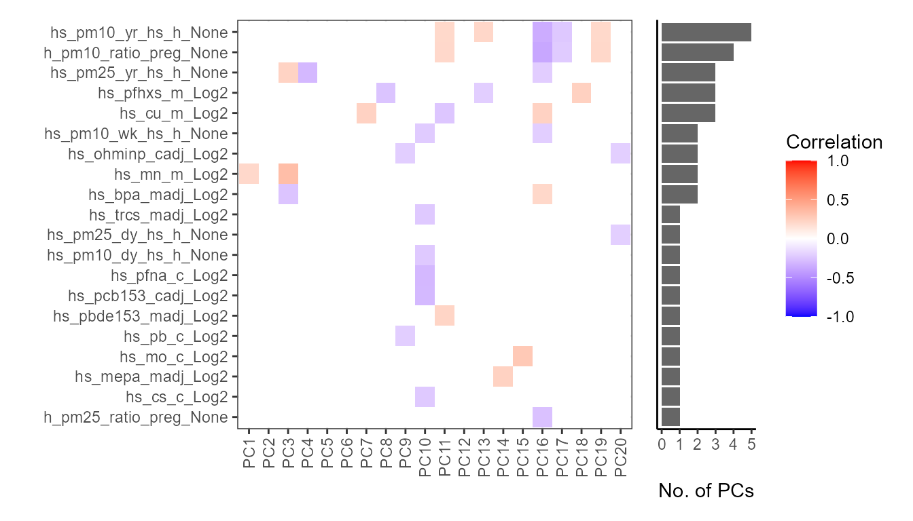
Here we note that particulate matter exposure and PFHXS exposure
(hs_pfhxs_m_Log2) are associated with the most principal
components, indicating these exposures are driving variation in the
data.
Exposure Summary
We can summarize the exposure data using the
run_summarize_exposures function. This function calculates
summary statistics for each exposure variable, including the number of
values, number of missing values, minimum, maximum, range, sum, median,
mean, standard error, and confidence intervals. The action argument is
set to get to return the summary statistics as a data frame. We specify
the exposure_cols argument to set the columns to
summarize.
# Summarize exposure data
expom_1 |>
run_summarize_exposures(
action = "get",
exposure_cols = exp_vars
) |>
head()## # A tibble: 6 × 27
## variable n_values n_na min max range sum median mean se ci_lower
## <chr> <dbl> <dbl> <dbl> <dbl> <dbl> <dbl> <dbl> <dbl> <dbl> <dbl>
## 1 h_pm10_rat… 139 0 2.29 3.86 1.57 446. 3.17 3.21 0.02 3.16
## 2 h_pm25_rat… 139 0 3.06 4.66 1.6 542. 3.89 3.9 0.02 3.85
## 3 hs_bpa_mad… 139 0 0 12.8 12.8 1242. 8.75 8.94 0.12 8.7
## 4 hs_cs_c_Lo… 139 0 0 2.35 2.35 157. 1.08 1.13 0.04 1.04
## 5 hs_cu_m_Lo… 139 0 2.29 2.41 0.12 326. 2.35 2.35 0 2.34
## 6 hs_mepa_ma… 139 0 0.86 14.1 13.2 956. 7.49 6.88 0.21 6.47
## # ℹ 16 more variables: ci_upper <dbl>, variance <dbl>, sd <dbl>,
## # coef_var <dbl>, period <chr>, location <chr>, description <chr>,
## # var_type <chr>, transformation <chr>, selected_ontology_label <chr>,
## # selected_ontology_id <chr>, root_id <chr>, root_label <chr>,
## # category <chr>, category_source <chr>, transformation_applied <chr>Exposure Visualization
To visualize our exposure data, we can use the
plot_exposures function. This function allows us to plot
the exposure data in a variety of ways. Here we will plot the exposure
data using a boxplot. The exposure_cat argument is used to
set the exposure category to plot. Additionally, we could specify
exposure_cols to only plot certain exposures. The
plot_type argument is used to set the type of plot to
create. Here we use a boxplot, but we could also use a ridge plot.
# Plot exposure data
expom_1 |>
plot_exposures(
group_by = "e3_sex_None",
exposure_cat = "aerosol",
plot_type = "boxplot",
ylab = "Values",
title = "Aerosol Exposure by Sex"
)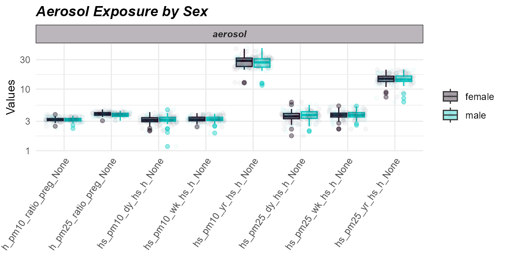
Here we see that there are not significant differences in aerosol exposure between males and females.
Sample-Exposure Association
Sample Clustering
The run_cluster_samples function is used to cluster
samples based on the exposure data. The clustering_approach
argument is used to set the clustering approach to automatically
identify clusters. Here we use the dynamic approach, which uses a
dynamic tree cut method to identify clusters. However, you may choose
between these other options as well:
gap: Gap statistic method (default); estimates optimalkby comparing within-cluster dispersion to that of reference data.diana: Divisive hierarchical clustering (DIANA); chooseskbased on the largest drop in dendrogram height.elbow: Elbow method; detects the point of maximum curvature in within-cluster sum of squares (WSS) to determinek.dynamic: Dynamic tree cut; adaptively detects clusters from a dendrogram structure without needing to predefinek.density: Density-based clustering (viadensityClust); identifies clusters based on local density peaks in distance space.
# Sample clustering
expom_1 <- expom_1 |>
run_cluster_samples(
exposure_cols = exp_vars,
clustering_approach = "dynamic",
action = "add"
)## ..cutHeight not given, setting it to 1620 ===> 99% of the (truncated) height range in dendro.
## ..done.We plot the sample clusters using the
plot_sample_clusters function. This function plots z-scored
values of the exposure data for each sample, colored by the cluster
assignment. The exposure_cols argument is used to set the
columns to plot.
# Plot sample clusters
expom_1 |>
plot_sample_clusters(
exposure_cols = exp_vars
)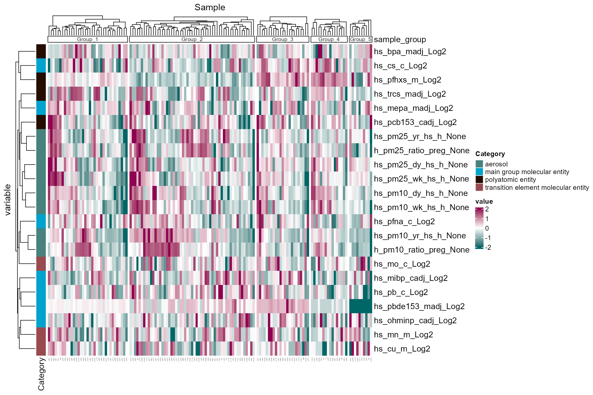
Here we see five clusters, largely driven by particulate
matter/aerosol exposure. Although it is worth noting that maternal PFHXS
exposure (hs_pfhxs_m_Log2) appears to strongly drive Groups
3 and 4.
Exposure Correlations
The run_correlation function can be used to correlate
exposure variables. The feature_type argument is used to
set the type of features to correlate. Here we use exposures to indicate
that we are correlating exposure variables. The
correlation_cutoff argument is used to set the minimum
correlation for the association. Here we use a cutoff of
0.3, but this can be adjusted based on the data.
expom_1 <- expom_1 |>
run_correlation(
feature_type = "exposures",
action = "add",
exposure_cols = exp_vars,
correlation_cutoff = 0.3
)To visualize the exposure correlations, we can use the
plot_circos_correlation function. Here we will plot the
circos plot. This function creates a circular plot of the exposure
correlations. The correlation_cutoff argument is used to
set the minimum correlation score for the association. Here we use a
cutoff of 0.3.
expom_1 |>
plot_circos_correlation(
feature_type = "exposures",
corr_threshold = 0.3,
exposure_cols = exp_vars
)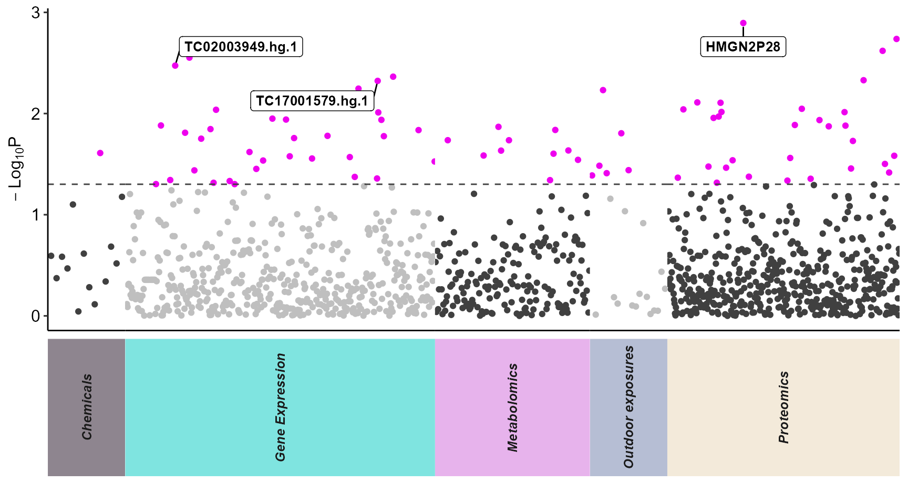
Here we see that particulate matter exposure variables are highly
correlated and also correlated with maternal pregnancy BPA
(hs_bpa_madj_Log2) and childhood PCB-153
(hs_pcb153_cadj_Log2) exposure.
Exposure-wide association (ExWAS)
The run_association function is used to run the
association analysis. The source argument is used to set
the source of the data to associate. The outcome argument
is used to set the outcome variable. The feature_set
argument is used to set the features to include in the analysis. The
covariates argument is used to set the covariates to
include in the analysis. The action argument is set to add
to add the results to the existing object. The family
argument is used to set the family of the model. Here we use
binomial for a binary outcome.
# Perform ExWAS Analysis
expom_1 <- expom_1 |>
run_association(
source = "exposures",
outcome = "hs_asthma",
feature_set = exp_vars,
covariates = c(
"hs_child_age_None",
"e3_sex_None",
"h_cohort"
),
action = "add",
family = "binomial"
)To visualize the results of the ExWAS analysis, we can use the
plot_association function. This function plots the
association results for the specified features. The terms argument is
used to set the features to plot. The filter_thresh
argument is used to set the threshold for filtering the results. The
filter_col argument is used to set the column to filter on.
Here we use p.value to filter on the p-value of the
association. We can also include the adjusted R^2 using the
r2_col argument.
expom_1 |>
plot_association(
subtitle = paste(
"Covariates:",
"Age,",
"Biological Sex, ",
"Cohort"
),
source = "exposures",
terms = exp_vars,
filter_thresh = 0.15,
filter_col = "p.value",
r2_col = "adj_r2"
)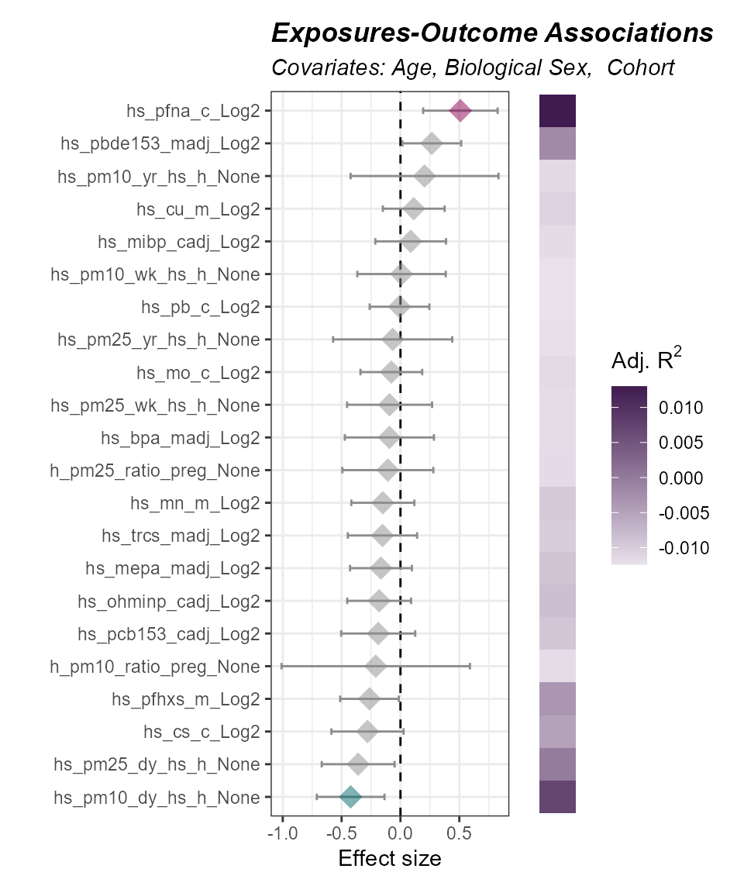
Here we see that particulate matter and PFNA
(hs_pfna_c_Log2) are associated with asthma status after
adjusting for age, biological sex, and cohort. Although the p-value
threshold for this association is quite generous.
We can also associate our omics features with an outcome of interest
using the run_association function. Here we specify an
additional argument, top_n, which is used to set the top
number of omics features to include per omics layer.
# Perform ExWAS Analysis
expom_1 <- expom_1 |>
run_association(
outcome = "hs_asthma",
source = "omics",
covariates = c(
"hs_child_age_None",
"e3_sex_None",
"h_cohort"
),
top_n = 500,
action = "add",
family = "binomial"
)We can visualize the results using a Manhattan plot. The
plot_manhattan function is used to plot the results. The
pval_thresh argument is used to set the p-value threshold
for significance. The vars_to_label argument is used to set
the variables to label on the plot. The min_per_cat
argument is used to set the minimum number of significant features per
category to include in the plot. The panel_sizes argument
is used to set the size of each panel in the plot.
expom_1 |>
plot_manhattan(
min_per_cat = 0,
feature_col = "feature_clean",
vars_to_label = c(
"TC01000261.hg.1",
"TC15000063.hg.1",
"cg14780466",
"hs_pfna_c_Log2"
),
panel_sizes = c(1, 3, 1, 1, 3, 1, 1),
facet_angle = 0
)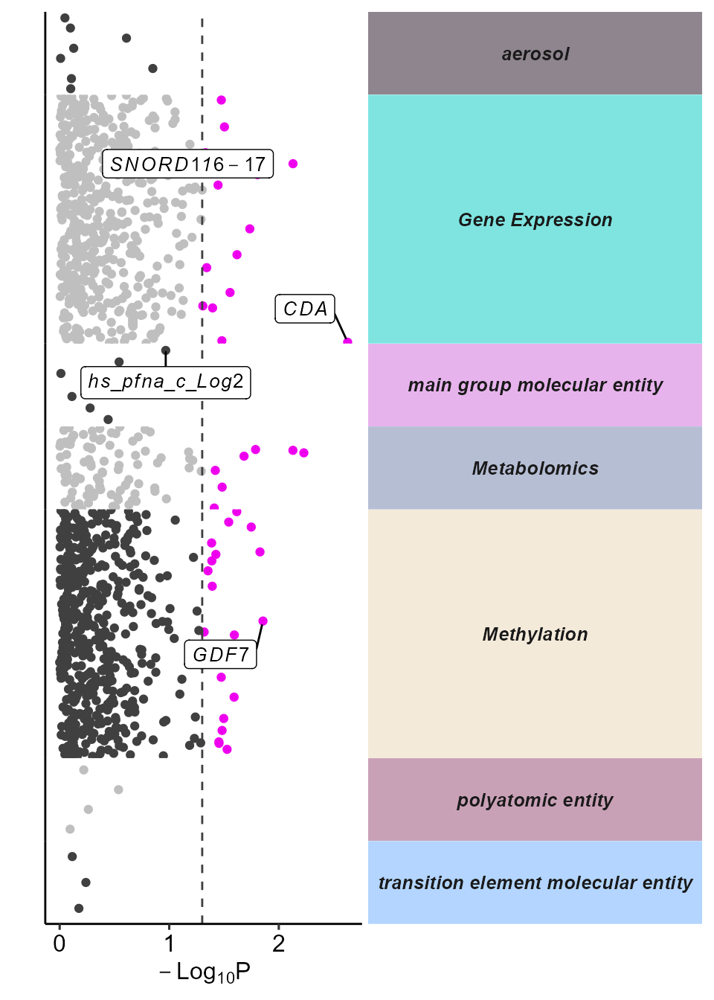
Exposome Scores
We can also calculate exposome scores, which are a summary measure of
exposure. The run_exposome_score function is used to
calculate the exposome score. The exposure_cols argument is
used to set the columns to use for the exposome score. The
score_type argument is used to set the type of score to
calculate. Here we could use:
median: Calculates the median of the exposure variables.mean: Calculates the mean of the exposure variables.sum: Calculates the sum of the exposure variables.pca: Calculates the first principal component of the exposure variables.irt: Uses Item Response Theory to calculate the exposome score.quantile: Calculates the quantile of the exposure variables.var: Calculates the variance of the exposure variables.
The score_column_name argument is used to set the name
of the column to store the exposome score in. Here we will define a
score for PFAS using a variety of different methods and demonstrate
their use in association with asthma status.
# determine which PFAS to use
pfas <- c("hs_pfhxs_m_Log2", "hs_pfna_c_Log2")
expom_1 <- expom_1 |>
run_exposome_score(
exposure_cols = pfas,
score_type = "median",
score_column_name = "exposome_median_score"
) |>
run_exposome_score(
exposure_cols = pfas,
score_type = "pca",
score_column_name = "exposome_pca_score"
) |>
run_exposome_score(
exposure_cols = pfas,
score_type = "irt",
score_column_name = "exposome_irt_score"
) |>
run_exposome_score(
exposure_cols = pfas,
score_type = "quantile",
score_column_name = "exposome_quantile_score"
) |>
run_exposome_score(
exposure_cols = pfas,
score_type = "var",
score_column_name = "exposome_var_score"
)We can then associate these exposome scores with the outcome of
interest using the run_association function, just like we
did before. However, this time we specify our feature_set
to be the exposome scores we just calculated.
# Associate Exposome Scores with Outcome
expom_1 <- expom_1 |>
run_association(
outcome = "hs_asthma",
source = "exposures",
feature_set = c(
"exposome_median_score",
"exposome_pca_score",
"exposome_irt_score",
"exposome_quantile_score",
"exposome_var_score"
),
covariates = c(
"hs_child_age_None",
"e3_sex_None",
"h_cohort"
),
action = "add",
family = "binomial"
)To plot the results of the exposome score association with the
outcome, we can use the plot_association function:
expom_1 |>
plot_association(
subtitle = "Covariates: Age, Biological Sex, Cohort",
source = "exposures",
terms = c(
"exposome_median_score",
"exposome_pca_score",
"exposome_irt_score",
"exposome_quantile_score",
"exposome_var_score"
),
filter_col = "p.value",
filter_thresh = 0.05
)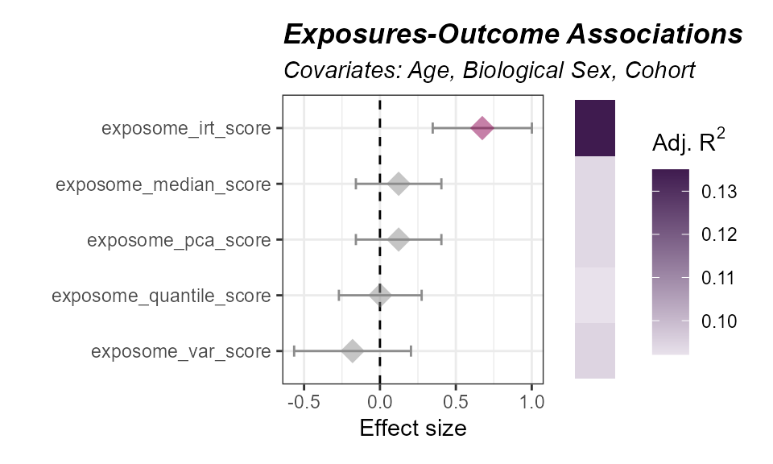
Here we see that most scores are associated with an increased probability of asthma. The item response theory (IRT) score is the only one that is significant.
Differential Abundance
Differential Abundance
We also provide functionality to assess differentially abundant
features associated with a particular outcome across several omics
layers. The run_differential_abundance function is used to
run the differential abundance analysis. The formula
argument is used to set the formula for the model. The
method argument is used to set the method to use for the
differential abundance analysis. Here we use the
limma_trend method, which is a popular method for
differential abundance analysis. The scaling_method
argument is used to set the scaling method to use. Here we use none, but
we could also use quantile or TMM. The action argument is
set to add to add the results to the existing object.
# Run differential abundance analysis
expom_1 <- expom_1 |>
run_differential_abundance(
formula = ~ hs_asthma + hs_child_age_None + e3_sex_None + h_cohort,
method = "limma_trend",
scaling_method = "none",
action = "add"
)Using a volcano plot, we can visualize the results of the
differential abundance analysis. The plot_volcano function
is used to plot the results. The pval_col argument is used
to set the column containing the p-values. The pval_thresh
argument is used to set the p-value threshold for significance. The
logFC_thresh argument is used to set the log fold change
threshold for significance. The top_n_label argument is
used to set the number of top features to label on the plot. The
nrow argument is used to set the number of rows in the
facet layout. We can use the feature_col to specify which
feature name column to plot. Here we set it to
feature_clean as this column contains the gene/metabolite
name information per feature.
Note: we set the pval_col to
P.Value for the purposes of this example, but we recommend
keeping the default of adj.P.Val to use the adjusted
p-values.
# Plot Differential Abundance Results
expom_1 |>
plot_volcano(
top_n_label = 3,
feature_col = "feature_clean",
logFC_thresh = log2(1),
pval_thresh = 0.05,
pval_col = "P.Value",
logFC_col = "logFC",
nrow = 1
)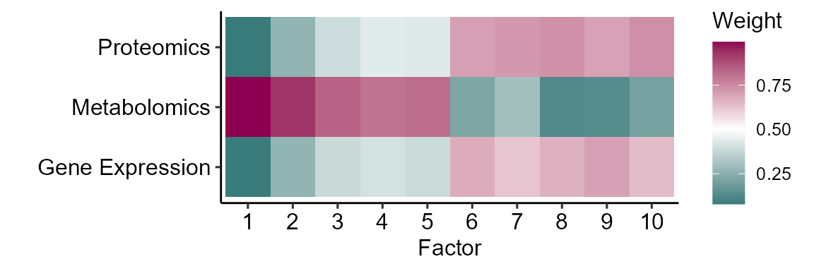
Sensitivity Analysis
Depending on pre-processing steps, the results of the differential
abundance analysis may vary. The sensitivity_analysis
function is used to perform a sensitivity analysis to determine the
robustness of the results. Here we determine if a feature is still
differentially abundant if different minimum values, proportions,
scaling methods are used, the inclusion of covariates, and after
bootstrapping. We then define a stability score based on the number of
times a feature is found to be differentially abundant under different
conditions as well as the consistency of the effect size:
Where:
\[ Stability\ Score = \frac{\sum_i{(p_i < \alpha)}}{N} * \frac{1}{1 + \frac{\sigma_{\beta}}{\mu_{|\beta|}}}\]
Where:
\(p_i\) is the p-value for the \(i^{th}\) test
\(\alpha\) is the significance threshold
\(\beta\) is the log fold change
\(N\) is the number of tests
\(\sigma_{\beta}\) is the standard deviation of the effect size estimates
\(\mu_{|\beta|}\) is the mean of the absolute value of the effect size estimates.
The first term captures the proportion of tests that are significant, while the second term captures the consistency of the effect size estimates. The stability score ranges from 0 to 1.
A stability score of 1 indicates that the feature is always found to be differentially abundant, while a stability score of 0 indicates that the feature is never found to be differentially abundant. Besides these, we provide other score metrics as well:
presence_rate: Proportion of runs in which the feature’s p-value is below the specified threshold (selection frequency).effect_consistency: Inverse of the coefficient of variation of log fold-changes; measures effect size stability across runs.stability_score: Hybrid score combining presence_rate and effect_consistency, capturing reproducibility and signal strength.mean_log_p: Average of negative log-transformed p-values; represents overall statistical signal strength.logp_weighted_score: Product ofmean_log_pand effect_consistency; highlights consistently strong features.sd_logFC: Standard deviation of log fold-change estimates; quantifies variability of effect sizes.iqr_logFC: Interquartile range of log fold-changes; provides a robust measure of effect size spread.cv_logFC: Coefficient of variation of log fold-changes; reflects relative variability of effect size.sign_flip_freq: Proportion of runs where the sign of the effect size differs from the overall average direction.sd_log_p: Standard deviation of log-transformed p-values; indicates variability in statistical signal.
# Perform Sensitivity Analysis
expom_1 <- expom_1 |>
run_sensitivity_analysis(
base_formula = ~ hs_asthma + hs_child_age_None + h_cohort,
methods = c("limma_trend"),
scaling_methods = c("none"),
covariates_to_remove = c(
"hs_child_age_None",
"e3_sex_None",
"h_cohort"
),
pval_col = "P.Value",
logfc_col = "logFC",
logFC_threshold = log2(1),
pval_threshold = 0.05,
stability_metric = "stability_score",
bootstrap_n = 10,
action = "add"
)Here we plot the sensitivity analysis results using the
plot_sensitivity_summary function. The
stability_score_thresh argument is used to set the
stability score threshold for significance. Here we use a threshold of
0.31, but this can again be adjusted as needed.
# Plot sensitivity analysis results
expom_1 |>
plot_sensitivity_summary(
stability_score_thresh = 0.31,
stability_metric = "stability_score"
)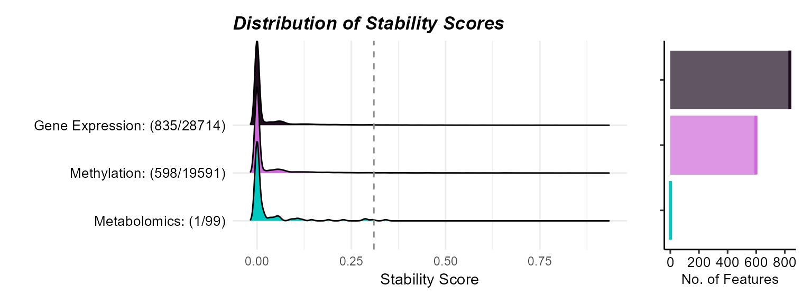
Multi-Omics Integration
Multi-Omics Integration
While differential abundance analysis per omics layer can deliver
insights into how each omic is associated with a particular outcome, we
may want to leverage methods which integrate multiple omics layers. The
run_multiomics_integration function is used to integrate
multiple omics layers. Here we use either MCIA,
RGCCA, MOFA, or the DIABLO method
to integrate omics layers:
MCIA: Multiple Co-inertia Analysis, a method that uses canonical correlation analysis to integrate multiple omics layers. We use the nipalsMCIA algorithm to compute the co-inertia scores from thenipalsMCIApackage (nipalsMCIA).RGCCA: Generalized canonical correlation for flexible multi-block integration implemented using theRGCCApackage (Regularized and Sparse Generalized Ca…).MOFA: Multi-Omics Factor Analysis, a method that uses factor analysis to integrate multiple omics layers. MOFA is implemented using theMOFA2package (MOFA2).DIABLO: DIABLO: Supervised multi-block PLS for outcome-aligned latent factors implemented using themixOmicspackage (mixOmics).
Here we are interested in integrating our omics layers with the end
goal of identifying multi-omics features that are associated with asthma
status. So, we will use the DIABLO method.
# Perform multi-omics integration
expom_1 <- expom_1 |>
run_multiomics_integration(
method = "DIABLO",
n_factors = 5,
outcome = "hs_asthma",
action = "add"
)We can then use plot_factor_summary to visualize which
omics contribute most to which factors.
# Plot multi-omics factor summary
expom_1 |>
plot_factor_summary(midpoint = 4)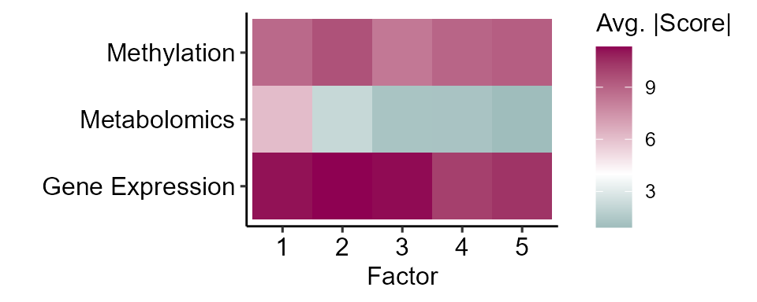
Here we see that these factors are largely driven by features in the methylation and gene expression assays.
Factor Analysis
These methods are designed to identify factors that we can then associate with an outcome variable. Here we will use the run_association function to identify factors that are associated with asthma status after controlling for child age, sex, and cohort.
# Identify factors that correlate with the outcome
expom_1 <- expom_1 |>
run_association(
source = "factors",
outcome = "hs_asthma",
feature_set = exp_vars,
covariates = c(
"hs_child_age_None",
"e3_sex_None",
"h_cohort"
),
action = "add",
family = "binomial"
)Now let’s see if any of our factors are associated with asthma status after adjusting for child age, sex, and cohort:
expom_1 |>
plot_association(
source = "factors",
subtitle = "Covariates: Age, Sex, Cohort",
filter_col = "p_adjust",
filter_thresh = 0.05,
r2_col = "adj_r2"
)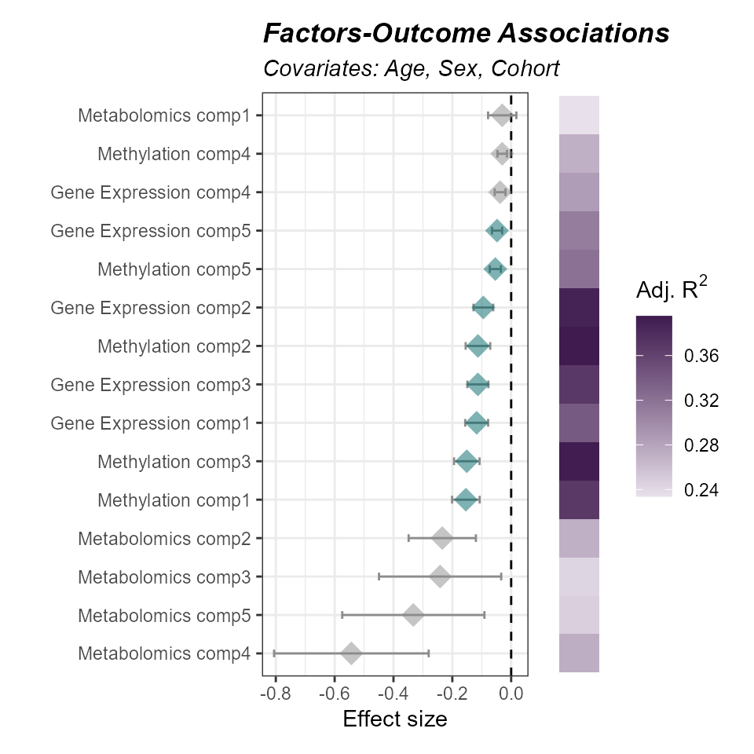
We see that several factors are associated with our outcome. Factors
have loading scores which indicate the strength of the association
between the factor and the features. Here we can extract the top
features, those in the 90th percentile, per omic, associated with our
factors of interest. We set the pval_col and
pval_thresh to filter our association results to grab the
factors that pass our thresholds. However, we could specify specific
factors with the factors argument too.
# Extract top features that contribute to a factor
expom_1 <- expom_1 |>
extract_top_factor_features(
method = "percentile",
pval_col = "p_adjust",
pval_thresh = 0.05,
percentile = 0.95,
action = "add"
)We can visualize the top features associated with each factor using
the plot_top_factor_features function. The
top_n argument is used to set the number of top features to
plot. The factors argument is used to set the factors to plot.
# Plot top factor features
expom_1 |>
plot_top_factor_features(
top_n = 15,
factors = c(
"Methylation comp3",
"Gene Expression comp3",
"Methylation comp1"
),
feature_col = "feature_clean"
)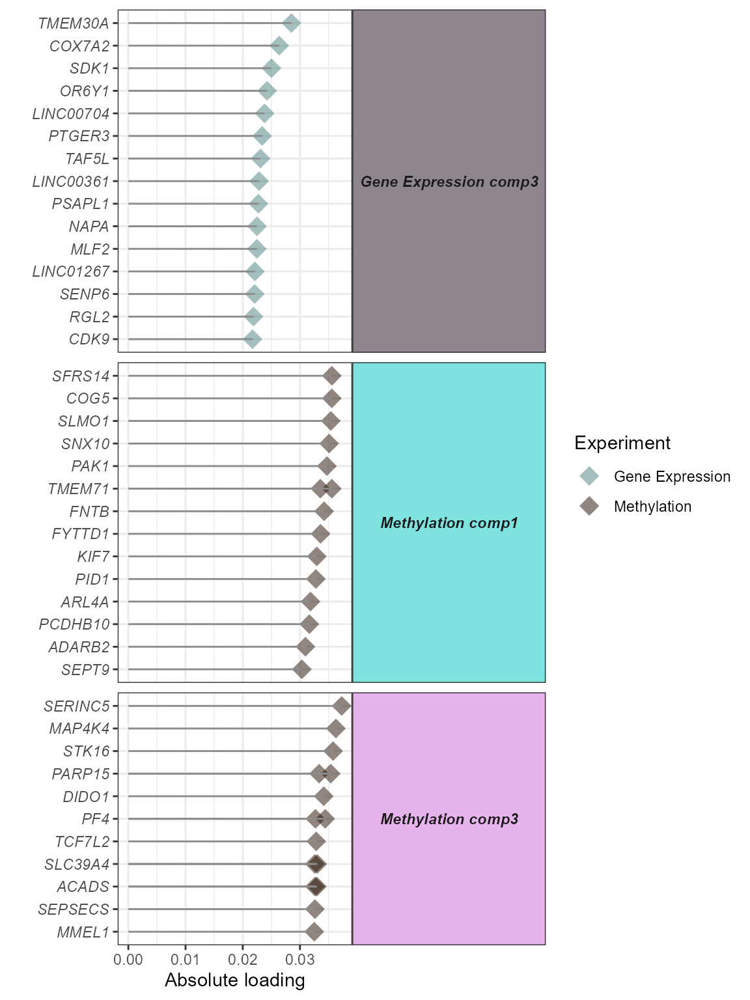
To identify the common features across factors, we can use the
run_factor_overlap function. This function will identify
the features that are shared across the top factor features.
# Determine which features drive multiple factors
expom_1 <- expom_1 |>
run_factor_overlap()Here we see that there are 703 features that are shared across the factors.
Exposure-Omics Association
Exposure-Omics Association
Now we have the option to correlate either the top factor features, differentially abundant features, or user-specified omics features (by using a variable map, a data frame with two columns, exp_name for the name of the omics assay, and variable for the name of the molecular feature) with exposures.
Here we will correlate features driving multiple latent factors with
exposures. To grab these features, we will grab them from the metadata
in our MultiAssayExperiment object. The
correlation_cutoff is used to set the minimum correlation
score, while the pval_cutoff is used to set the maximum
p-value for the association.
# Grab top common factor features and ensure
# feature is renamed to variable for the variable_map
top_factor_features <- expom_1 |>
extract_results(result = "multiomics_integration") |>
pluck("common_top_factor_features") |>
dplyr::select(
variable = feature,
exp_name
)
# Correlate top factor features with exposures
expom_1 <- expom_1 |>
# Perform correlation analysis between factor features
# and exposures
run_correlation(
feature_type = "omics",
variable_map = top_factor_features,
exposure_cols = exp_vars,
action = "add",
correlation_cutoff = 0.2,
pval_cutoff = 0.05,
cor_pval_column = "p.value"
) |>
# Perform correlation analysis between factor features
run_correlation(
feature_type = "omics",
variable_map = top_factor_features,
feature_cors = TRUE,
action = "add",
correlation_cutoff = 0.2,
pval_cutoff = 0.05,
cor_pval_column = "p.value"
)We can plot the results of the exposure-omics association analysis
using the plot_correlation_summary function. Here we set
the mode to summary, which will plot the number of
associations per exposure and feature type. The
feature_type argument is used to set the type of features
to plot. Here we use omics, which are the top factor
features.
expom_1 |>
plot_correlation_summary(
mode = "summary",
feature_type = "omics"
)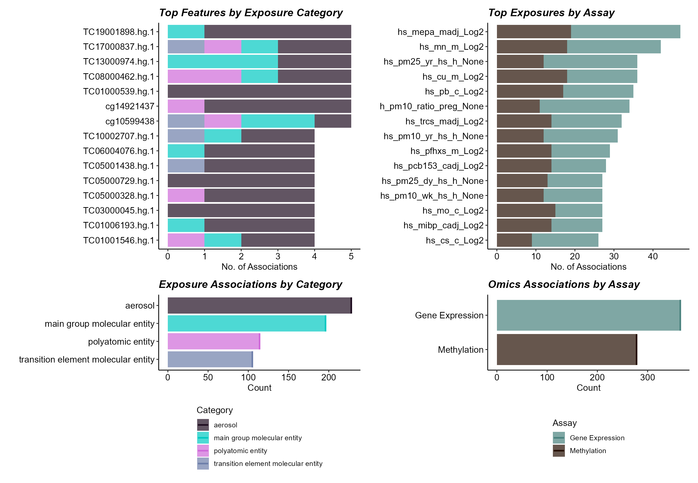
Here we note that gene expression features have a greater number of associations with exposures. Among exposures, we see that aerosols have the greatest number of associations with features, which may reflect the larger number of aerosol variables.
It may also be useful to identify which exposures are correlated with
similar molecular features. We can do this with the
plot_circos_correlation function. This function will plot a
circos plot of the exposures and their shared features. The
feature_type argument is used to set the correlation
results to use for the analysis. Here we use the omics
feature set, which plots the feature-exposure correlation information.
The cutoff argument is used to set the minimum number of shared features
to plot. Here we set the shared_cutoff to 1, which means
that only exposures that share at least one feature will be plotted.
# Plot Shared Feature Correlations Between Exposures
expom_1 |>
plot_circos_correlation(
feature_type = "omics",
shared_cutoff = 1,
midpoint = 3
)
Here we see that particulate matter exposures are correlated with
many of the same features. However, we also see that maternal methyl
paraben exposure (hs_mepa_madj_Log2) is correlated with
many of the same features, suggesting that this exposure may have
similar effects on the molecular features.
Network Analysis
The run_create_network function is used to create a
network of exposures and omics features. The correlation results are
used to create the network. The feature_type argument is
used to set the type of features to use for the network. We could choose
any of the following:
degs: Differentially abundant features correlated with exposures.factors: Factor features correlated with exposures.omics: User specified omics features correlated with exposures.
Here we create networks based on two correlation tables generated above:
omics: Correlations between omics and exposure variables.omics_feature_cor: Correlation just between the omics features.
This allows us to quantify a bipartite graph between exposures and omics features and a graph just between the omics features.
expom_1 <- expom_1 |>
run_create_network(
feature_type = "omics_feature_cor",
action = "add"
) |>
run_create_network(
feature_type = "omics",
action = "add"
)To plot the network we can use the plot_network
function. The network argument is used to set the type of network to
plot. The top_n_nodes argument is used to set the number of
nodes to plot. The node_color_var argument is used to set
the variable to color the nodes by. The label argument is
used to set whether or not to label the nodes. We can label the top n
nodes, where the default is 5 nodes based on centrality. Additionally,
we can choose to label certain nodes using the
nodes_to_label argument. We can also include the network
statistics using the include_stats argument.
expom_1 |>
plot_network(
network = "omics",
top_n_nodes = 100,
include_stats = TRUE,
cor_thresh = 0.2,
node_color_var = "group",
label = TRUE,
label_top_n = 5
)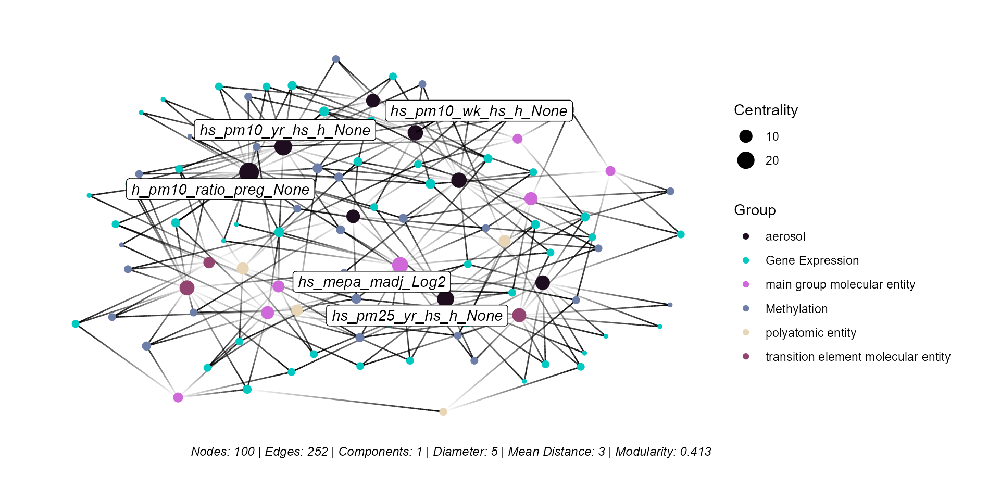
Here we note that the network is highly connected, with particulate matter and methyl paraben exposures having the most connections to omics features. To briefly explain the metrics mentioned:
Nodes: Number of nodes included in the graph.
Edges: Number of connections between nodes in the graph.
Components: Number of disconnected subgraphs.
Diameter: The longest shortest path between any two nodes.
Mean Distance: The average shortest path between any two nodes.
Modularity: A measure of the division in the graph, where higher modularity indicates that nodes within the same community are more densely connected compared to nodes in different communities.
Exposure-Omics Impact Network Analysis
The bipartite graph above describes how exposures are associated with omics features. However, this does not describe if exposures are associated with features that are more central in the feature-only graph (i.e. are exposures associated with features that are more central or peripheral to the graph?). To answer this question, we can use the run_exposure_impact function to calculate centrality metrics for the omics features associated with a given exposure. Centrality is computed on the feature-only graph. Centrality metrics are used to identify features that are more central to the network and may be more important in the context of the exposure-omics relationships. The centrality metrics included are:
Mean Betweenness Centrality: Measures how often a node lies on the shortest path between other nodes where high values indicate potential intermediates.
Mean Closeness Centrality: Measures how close a node is to all others in the network where high values indicate faster access to all nodes.
Mean Degree: The average number of direct connections or edges a node has.
Mean Eigenvector Centrality: Measures how well-connected a node is and how well-connected its neighbors are, where high values suggest influence in a well-connected cluster.
# Run exposure-omics impact analysis
expom_1 <- expom_1 |>
run_exposure_impact(feature_type = "omics")To plot the results of the exposure-omics impact analysis, we can use
the plot_exposure_impact function. We set
feature_type to omics, which means that we are
plotting the network metrics of the omics features correlated with
exposures. The min_per_group argument is used to set the
minimum number of features per group to plot. This is useful for
filtering out exposures that do not have enough associated features.
# Plot exposure-omics impact results
expom_1 |>
plot_exposure_impact(
feature_type = "omics",
min_per_group = 10
)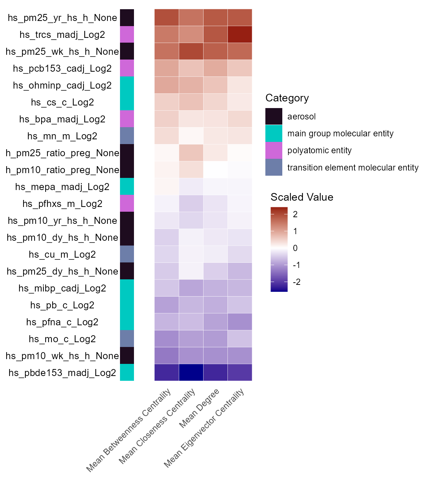
Here we see that maternal triclosan (hs_trcs_madj_Log2)
exposure is associated with omics features that are central to our
network, despite not having the greatest number of features associated
with it. This suggests that maternal triclosan exposure may have a
significant impact on the omics features, even if it is not associated
with as many features as some of the other exposures.
Enrichment Analysis
The benefit of grouping our exposures into categories is that we can
perform enrichment analysis on the associated features to determine how
broad categories of exposures are associated with features. The
run_enrichment function is used to perform enrichment
analysis. Here we could enrich the following feature types:
degs: Differentially abundant features.degs_robust: Robust differentially abundant features from the sensitivity analysis.omics: User chosen features.factor_features: Multi-omics factor features either fromfactor_type = “common_top_factor_features”or“top_factor_features”.degs_cor: Differentially abundant features correlated with a set of exposures.omics_cor: User chosen features correlated with a set of exposures.factor_features_cor: Multi-omics factor features correlated with a set of exposures.
Here we will run enrichment analysis on our chosen factor features
correlated with exposures. We specify feature_col to
represent the column in our feature metadata with IDs that can be mapped
(i.e. gene names). We will be performing Gene ontology enrichment
powered by the fenr
package (fenr ). Note that we specify a
clustering_approach. This will cluster our enrichment terms
by the molecular feature overlap.
# Run enrichment analysis on factor features correlated with exposures
expom_1 <- expom_1 |>
run_enrichment(
feature_type = c("omics_cor"),
feature_col = "feature_clean",
db = c("GO"),
species = "goa_human",
fenr_col = "gene_symbol",
padj_method = "none",
pval_thresh = 0.1,
min_set = 1,
max_set = 800,
clustering_approach = "diana",
action = "add"
)Enrichment Visualizations
To visualize our enrichment results we provide several options:
dot`plot: A dot plot showing the top enriched terms. The size of the dots represents the number of features associated with the term, while the color represents the significance of the term.
cnet: A network plot showing the relationship between features and enriched terms.network: A network plot showing the relationship between enriched terms.heatmap: A heatmap showing the relationship between features and enriched terms.summary: A summary figure of the enrichment results.
Enrichment Summary
To summarize the enrichment results, we can use the
plot_enrichment function with the plot_type
argument set to summary. This will plot a summary of the
enrichment results, showing:
The number of exposure categories per enrichment term group.
The number of features driving the enrichment term group.
A p-value distribution of the enrichment term group.
The number of terms in the enrichment term group.
The total number of terms per experiment name.
The overlap in enrichment terms between experiments (i.e. between gene expression and methylation).
expom_1 |>
plot_enrichment(
feature_type = "omics_cor",
plot_type = "summary"
)
Here we see that it is just the features associated with “polyatomic entity” exposures that seem to be enriched. Additionally, there appears to be no overlap in terms between methylation and gene expression results.
DotPlot
By setting the plot_type to dotplot we can create a
dotplot to show which omics and which exposure categories are associated
with which terms. By specifying the top_n_genes we can add
the most frequent features in that particular enrichment term group.
expom_1 |>
plot_enrichment(
feature_type = "omics_cor",
plot_type = "dotplot",
top_n = 15,
add_top_genes = TRUE,
top_n_genes = 5
)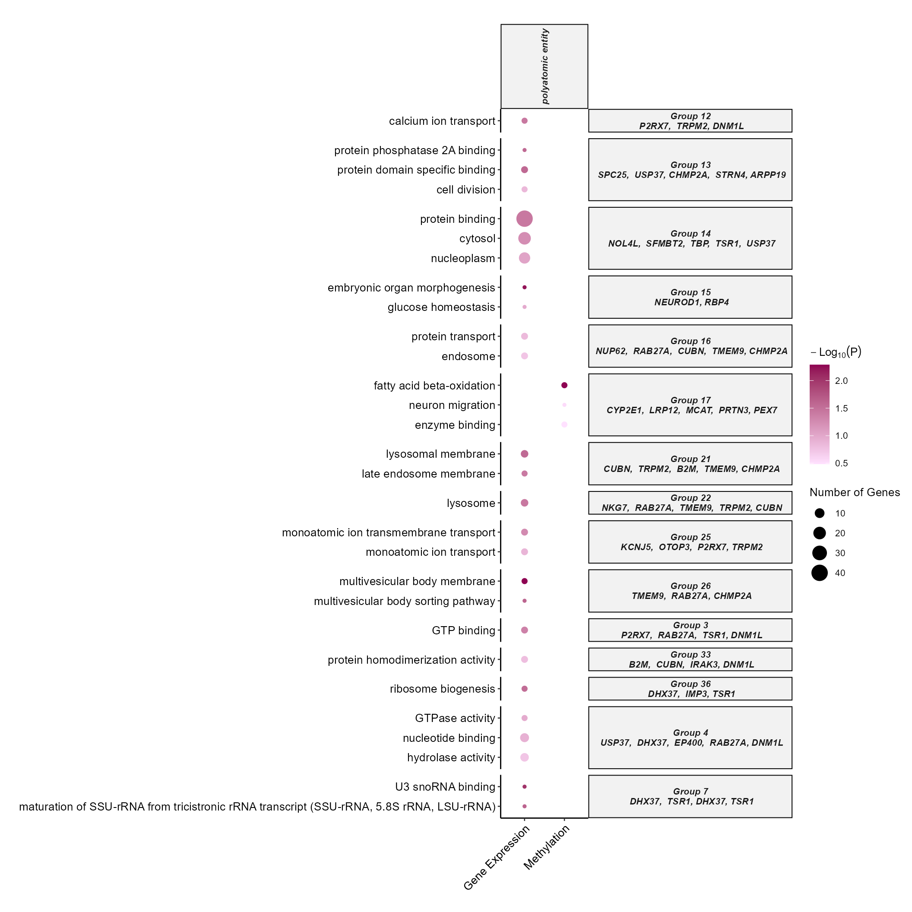
Term Network Plot
We can set the plot_type to network to
understand how our enrichment terms are individually connected.
expom_1 |>
plot_enrichment(
feature_type = "omics_cor",
plot_type = "network",
label_top_n = 2
)
At the individual term level, we see that they differ by omics layer, with the gene expression driving terms related to protein binding and the methylation data driving terms related to lipid metabolism.
Heatmap
Setting the plot_type to heatmap can help
us understand which genes are driving the enrichment terms. We have the
additional benefit of being able to color our tiles by the Log_2_Fold
Change from our differential abundance testing. Here we will examine
group 5, given it seems to be driven by the most terms and multiple
omics layers.
expom_1 |>
plot_enrichment(
feature_type = "omics_cor",
go_groups = "Group_5",
plot_type = "heatmap",
heatmap_fill = TRUE,
feature_col = "feature_clean"
)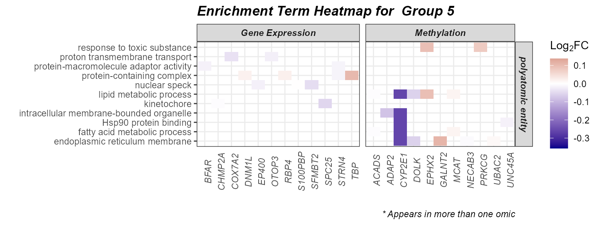
Here we see that methylation features have the strongest fold change with respect to asthma status. Interestingly, we see that methylation of CYP2E1, an enzyme responsible for toxicant metabolism, is downregulated in asthma and correlated with exposures in the polyatomic entity category containing chemicals like triclosan, BPA and several PFAS.
Cnet Plot
Another way to visualize this information is with the
cnet plot, where the enrichment terms are connected to the
genes driving them.
expom_1 |>
plot_enrichment(
feature_type = "omics_cor",
go_groups = "Group_5",
plot_type = "cnet",
feature_col = "feature_clean"
)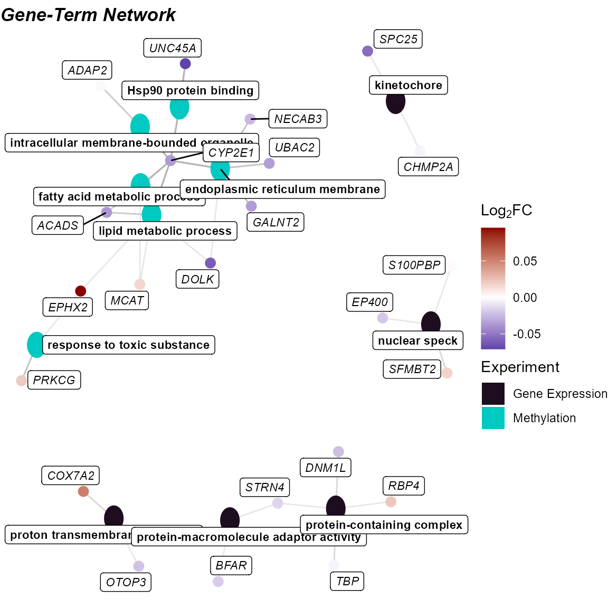
Custom Analysis
We provide functionality to access the underlying data in the MultiAssayExperiment object and to construct tibbles for your own analysis:
pivot_sample: Pivot the sample data to a tibble with samples as rows and exposures as columns.pivot_feature: Pivot the feature metadata to a tibble with features as rows and feature metadata as columns.pivot_exp: Pivot the sample and experiment assay data to a tibble with samples as rows and sample metadata as columns. Additionally, there will be a column for values for specified features in specified assays.
Pivot Sample
Let’s check out the pivot_sample function. This function
pivots the sample data to a tibble with samples as rows and exposures as
columns.
# Pivot sample data to a tibble
expom_1 |>
pivot_sample() |>
head()## # A tibble: 6 × 357
## .sample h_abs_ratio_preg_Log h_no2_ratio_preg_Log hs_no2_dy_hs_h_Log
## <chr> <dbl> <dbl> <dbl>
## 1 s224 1.01 3.21 3.32
## 2 s873 -0.00513 2.48 3.32
## 3 s846 0.841 2.90 3.36
## 4 s1019 -0.0663 2.89 3.08
## 5 s1099 -0.137 2.13 2.65
## 6 s725 0.354 3.18 2.69
## # ℹ 353 more variables: hs_no2_wk_hs_h_Log <dbl>, hs_no2_yr_hs_h_Log <dbl>,
## # hs_pm25abs_dy_hs_h_Log <dbl>, hs_pm25abs_wk_hs_h_Log <dbl>,
## # hs_pm25abs_yr_hs_h_Log <dbl>, h_accesslines300_preg_dic0 <dbl>,
## # h_accesspoints300_preg_Log <dbl>, h_builtdens300_preg_Sqrt <dbl>,
## # h_connind300_preg_Sqrt <dbl>, h_fdensity300_preg_Log <dbl>,
## # h_frichness300_preg_None <dbl>, h_landuseshan300_preg_None <dbl>,
## # h_popdens_preg_Sqrt <dbl>, h_walkability_mean_preg_None <dbl>, …We could use this functionality to count the number of asthmatics per sex:
expom_1 |>
pivot_sample() |>
group_by(hs_asthma, e3_sex_None) |>
summarise(n = n())## # A tibble: 4 × 3
## # Groups: hs_asthma [2]
## hs_asthma e3_sex_None n
## <dbl> <fct> <int>
## 1 0 female 67
## 2 0 male 52
## 3 1 female 10
## 4 1 male 10Pivot Feature
The pivot_feature function pivots the feature metadata
to a tibble with features as rows and feature metadata as columns. This
can be useful for exploring the feature metadata in a more flexible
way.
# Pivot feature data to a tibble
expom_1 |>
pivot_feature() |>
head()## # A tibble: 6 × 44
## .exp_name .feature transcript_cluster_id probeset_id seqname strand start
## <chr> <chr> <chr> <chr> <chr> <chr> <int>
## 1 Gene Express… TC01000… TC01000001.hg.1 TC01000001… chr1 + 11869
## 2 Gene Express… TC01000… TC01000002.hg.1 TC01000002… chr1 + 29554
## 3 Gene Express… TC01000… TC01000003.hg.1 TC01000003… chr1 + 69091
## 4 Gene Express… TC01000… TC01000005.hg.1 TC01000005… chr1 + 317811
## 5 Gene Express… TC01000… TC01000007.hg.1 TC01000007… chr1 + 321146
## 6 Gene Express… TC01000… TC01000009.hg.1 TC01000009… chr1 + 367640
## # ℹ 37 more variables: stop <int>, total_probes <int>, gene_assignment <chr>,
## # mrna_assignment <chr>, notes <chr>, phase <chr>, TC_size <dbl>,
## # TSS_Affy <int>, EntrezeGeneID_Affy <chr>, GeneSymbol_Affy <chr>,
## # GeneSymbolDB <chr>, GeneSymbolDB2 <chr>, mrna_ID <chr>, mrna_DB <chr>,
## # mrna_N <int>, notesYN <chr>, geneYN <chr>, genes_N <dbl>, CallRate <dbl>,
## # fil1 <chr>, feature_clean <chr>, Forward_Sequence <chr>, SourceSeq <chr>,
## # Random_Loci <chr>, Methyl27_Loci <chr>, UCSC_RefGene_Name <chr>, …We could use this functionality to count the number of features per omics layer, or to filter features based on their metadata. For example, we can count the number of features per omics layer:
# Count the number of features per omic layer
expom_1 |>
pivot_feature() |>
group_by(.exp_name) |>
summarise(n = n())## # A tibble: 3 × 2
## .exp_name n
## <chr> <int>
## 1 Gene Expression 28714
## 2 Metabolomics 99
## 3 Methylation 19591Pivot Experiment
Now if we want to grab assay data from a particular experiment, we
can do that with the pivot_exp. Let’s try grabbing assay
values for the cg25330361 probe (methylation probe for
CYP2E1) in the Methylation experiment:
# Pivot experiment data to a tibble
expom_1 |>
pivot_exp(
omics_name = "Methylation",
features = "cg25330361"
) |>
head()## # A tibble: 6 × 375
## exp_name .feature .sample counts h_abs_ratio_preg_Log h_no2_ratio_preg_Log
## <chr> <chr> <chr> <dbl> <dbl> <dbl>
## 1 Methylation cg253303… s224 0.826 1.01 3.21
## 2 Methylation cg253303… s873 1.16 -0.00513 2.48
## 3 Methylation cg253303… s1019 0.974 -0.0663 2.89
## 4 Methylation cg253303… s725 1.06 0.354 3.18
## 5 Methylation cg253303… s1025 0.656 0.0545 2.76
## 6 Methylation cg253303… s242 0.968 0.338 2.92
## # ℹ 369 more variables: hs_no2_dy_hs_h_Log <dbl>, hs_no2_wk_hs_h_Log <dbl>,
## # hs_no2_yr_hs_h_Log <dbl>, hs_pm25abs_dy_hs_h_Log <dbl>,
## # hs_pm25abs_wk_hs_h_Log <dbl>, hs_pm25abs_yr_hs_h_Log <dbl>,
## # h_accesslines300_preg_dic0 <dbl>, h_accesspoints300_preg_Log <dbl>,
## # h_builtdens300_preg_Sqrt <dbl>, h_connind300_preg_Sqrt <dbl>,
## # h_fdensity300_preg_Log <dbl>, h_frichness300_preg_None <dbl>,
## # h_landuseshan300_preg_None <dbl>, h_popdens_preg_Sqrt <dbl>, …We can use this functionality to create custom plots or analyses based on the exposure and feature data. For example, we can plot the methylation levels of CYP2E1 by asthma status:
# Plot the distribution of a specific feature across samples
expom_1 |>
pivot_exp(
omics_name = "Methylation",
features = "cg25330361"
) |>
ggplot(aes(
x = as.character(hs_asthma),
y = log2(counts + 1),
color = as.character(hs_asthma),
fill = as.character(hs_asthma)
)) +
geom_boxplot(alpha = 0.5) +
geom_jitter(alpha = 0.1) +
ggpubr::geom_pwc(
label = "{p.adj.format}{p.adj.signif}"
) +
theme_minimal() +
ggpubr::rotate_x_text(angle = 45) +
ggsci::scale_color_cosmic() +
ggsci::scale_fill_cosmic() +
labs(
x = "",
y = expression(Log[2] * "Abd."),
fill = "Asthma Status",
color = "Asthma Status"
)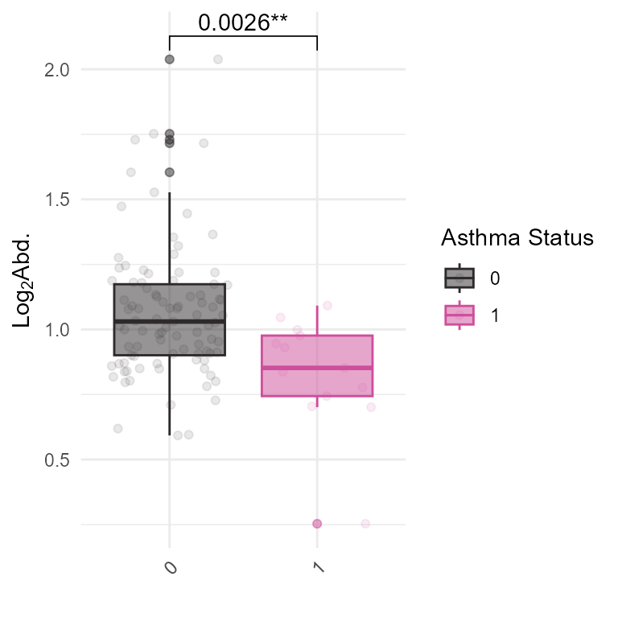
Pipeline Summary
To summarize the steps we have taken in this analysis, we can use the
run_pipeline_summary function. This function will provide a
summary of the steps taken in the analysis. We can set
console_print to TRUE to print the summary to
the console. Setting include_notes to TRUE
will include notes on the steps taken in the analysis.
# Run the pipeline summary
expom_1 |>
run_pipeline_summary(
console_print = TRUE,
include_notes = TRUE
)## 1. filter_missing - Filtered exposure variables and omics features with more than 5% missing values. QC plots generated for exposure and omics data.2. run_impute_missing - 3. filter_omics_Methylation - Filtered omics features from 'Methylation'
## Using method = 'variance': 40253 removed of 59844 (67.3%).4. filter_omics_Metabolomics - Filtered omics features from 'Metabolomics'
## Using method = 'variance': 78 removed of 177 (44.1%).5. filter_omics_Gene Expression - Filtered omics features from 'Gene Expression'
## Using method = 'expression': 24 removed of 28738 (0.1%).6. run_normality_check - Assessed normality of 180 numeric exposure variables. 29 were normally distributed (p > 0.05), 151 were not.7. transform_exposure - Applied 'boxcox_best' transformation to 22 exposure variables. 6 passed normality (Shapiro-Wilk p > 0.05, 27.3%).8. run_pca - Outliers: s73, s1183, s376, s899, s828, s9939. filter_sample_outliers - Outliers: s73, s1183, s376, s899, s828, s99310. run_correlation_pcs - Correlated pcs features with exposures.11. run_cluster_samples - Optimal number of clusters for samples: 512. run_correlation_exposures - Correlated exposures features with exposures.13. run_association - Performed association analysis using source: exposures14. run_association - Performed association analysis using source: exposures15. run_exposome_score_exposome_median_score - Exposome score computed using method: 'median'16. run_exposome_score_exposome_pca_score - Exposome score computed using method: 'pca'17. run_exposome_score_exposome_irt_score - Exposome score computed using method: 'irt'18. run_exposome_score_exposome_quantile_score - Exposome score computed using method: 'quantile'19. run_exposome_score_exposome_var_score - Exposome score computed using method: 'var'20. run_association - Performed association analysis using source: exposures21. run_differential_abundance - Performed differential abundance analysis across all assays.22. run_sensitivity_analysis - Ran sensitivity analysis across 10 bootstrap iterations and 1 methods and 1 scaling strategies. Covariates removed in model variations: hs_child_age_None, e3_sex_None, h_cohort23. run_multiomics_integration - Performed multi-omics integration using DIABLO with 5 latent factors. Scaling was enabled.24. run_association - Performed association analysis using source: exposures25. extract_top_factor_features - Selected 9664 features contributing to specified factors.26. run_factor_overlap - Annotated based on 'stability_score' score > 0.341.27. run_correlation_omics - Correlated omics features with exposures.28. run_correlation_omics - Correlated omics features with exposures.29. run_create_network - Created undirected network from correlation results for'omics_feature_cor'.30. run_create_network - Created undirected network from correlation results for'omics_feature_cor'.31. run_exposure_impact - Computed exposure impact using omics correlation network.32. run_enrichment - Performed GO enrichment on omics_cor features.Saving Results
We can export the results in our MultiAssayExperiment to
an Excel spreadsheet using the extract_results_excel
function. Here we add all of our results to the Excel file, but we can
choose certain results by changing the result_types
argument.
extract_results_excel(expom_1,
file = "./supplementary_results.xlsx",
result_types = "all"
)Session Info
## R version 4.4.1 (2024-06-14 ucrt)
## Platform: x86_64-w64-mingw32/x64
## Running under: Windows 11 x64 (build 26100)
##
## Matrix products: default
##
##
## locale:
## [1] LC_COLLATE=English_United States.utf8
## [2] LC_CTYPE=English_United States.utf8
## [3] LC_MONETARY=English_United States.utf8
## [4] LC_NUMERIC=C
## [5] LC_TIME=English_United States.utf8
##
## time zone: America/New_York
## tzcode source: internal
##
## attached base packages:
## [1] stats graphics grDevices utils datasets methods base
##
## other attached packages:
## [1] tidyexposomics_0.99.0 lubridate_1.9.4 forcats_1.0.0
## [4] stringr_1.5.1 dplyr_1.1.4 purrr_1.1.0
## [7] readr_2.1.5 tidyr_1.3.1 tibble_3.3.0
## [10] ggplot2_3.5.2 tidyverse_2.0.0 BiocStyle_2.32.1
##
## loaded via a namespace (and not attached):
## [1] fs_1.6.6 matrixStats_1.5.0
## [3] naniar_1.1.0 httr_1.4.7
## [5] RColorBrewer_1.1-3 doParallel_1.0.17
## [7] ggsci_3.2.0 dynamicTreeCut_1.63-1
## [9] tools_4.4.1 doRNG_1.8.6.2
## [11] backports_1.5.0 utf8_1.2.6
## [13] R6_2.6.1 vegan_2.7-1
## [15] lazyeval_0.2.2 mgcv_1.9-1
## [17] permute_0.9-8 GetoptLong_1.0.5
## [19] withr_3.0.2 gridExtra_2.3
## [21] preprocessCore_1.66.0 progressr_0.15.1
## [23] cli_3.6.5 Biobase_2.64.0
## [25] textshaping_1.0.1 factoextra_1.0.7
## [27] RGCCA_3.0.3 labeling_0.4.3
## [29] sass_0.4.10 randomForest_4.7-1.2
## [31] ggridges_0.5.6 pbapply_1.7-4
## [33] pkgdown_2.1.3 systemfonts_1.2.3
## [35] foreign_0.8-86 R.utils_2.13.0
## [37] dichromat_2.0-0.1 sessioninfo_1.2.3
## [39] parallelly_1.45.1 itertools_0.1-3
## [41] limma_3.60.6 RSQLite_2.4.2
## [43] rstudioapi_0.17.1 FNN_1.1.4.1
## [45] generics_0.1.4 shape_1.4.6.1
## [47] vroom_1.6.5 car_3.1-3
## [49] dendextend_1.19.1 Matrix_1.7-0
## [51] S4Vectors_0.42.1 abind_1.4-8
## [53] R.methodsS3_1.8.2 lifecycle_1.0.4
## [55] edgeR_4.2.2 yaml_2.3.10
## [57] snakecase_0.11.1 carData_3.0-5
## [59] SummarizedExperiment_1.34.0 BiocFileCache_2.12.0
## [61] recipes_1.3.1 SparseArray_1.4.8
## [63] Rtsne_0.17 blob_1.2.4
## [65] grid_4.4.1 crayon_1.5.3
## [67] lattice_0.22-6 magick_2.8.7
## [69] pillar_1.11.0 knitr_1.50
## [71] ComplexHeatmap_2.20.0 GenomicRanges_1.56.2
## [73] rjson_0.2.23 corpcor_1.6.10
## [75] future.apply_1.20.0 mixOmics_6.28.0
## [77] codetools_0.2-20 glue_1.8.0
## [79] ggvenn_0.1.10 beepr_2.0
## [81] data.table_1.17.8 MultiAssayExperiment_1.30.3
## [83] vctrs_0.6.5 png_0.1-8
## [85] testthat_3.2.3 gtable_0.3.6
## [87] assertthat_0.2.1 cachem_1.1.0
## [89] gower_1.0.2 xfun_0.52
## [91] S4Arrays_1.4.1 prodlim_2025.04.28
## [93] tidygraph_1.3.1 pracma_2.4.4
## [95] survival_3.6-4 audio_0.1-11
## [97] timeDate_4041.110 iterators_1.0.14
## [99] nipalsMCIA_1.2.1 hardhat_1.4.1
## [101] lava_1.8.1 statmod_1.5.0
## [103] ipred_0.9-15 nlme_3.1-164
## [105] fenr_1.2.1 bit64_4.6.0-1
## [107] filelock_1.0.3 GenomeInfoDb_1.40.1
## [109] bslib_0.9.0 Deriv_4.2.0
## [111] rpart_4.1.23 DBI_1.2.3
## [113] colorspace_2.1-1 BiocGenerics_0.50.0
## [115] Hmisc_5.2-3 nnet_7.3-19
## [117] tidyselect_1.2.1 bit_4.6.0
## [119] compiler_4.4.1 curl_6.4.0
## [121] tidyHeatmap_1.12.2 rvest_1.0.4
## [123] httr2_1.2.1 htmlTable_2.4.3
## [125] xml2_1.3.8 desc_1.4.3
## [127] DelayedArray_0.30.1 plotly_4.11.0
## [129] bookdown_0.43 checkmate_2.3.2
## [131] scales_1.4.0 rappdirs_0.3.3
## [133] digest_0.6.37 rmarkdown_2.29
## [135] XVector_0.44.0 htmltools_0.5.8.1
## [137] pkgconfig_2.0.3 base64enc_0.1-3
## [139] SimDesign_2.20.0 MatrixGenerics_1.16.0
## [141] dbplyr_2.5.0 fastmap_1.2.0
## [143] rlang_1.1.6 GlobalOptions_0.1.2
## [145] htmlwidgets_1.6.4 UCSC.utils_1.0.0
## [147] ggh4x_0.3.1 farver_2.1.2
## [149] jquerylib_0.1.4 jsonlite_2.0.0
## [151] BiocParallel_1.38.0 dcurver_0.9.2
## [153] R.oo_1.27.1 ModelMetrics_1.2.2.2
## [155] magrittr_2.0.3 Formula_1.2-5
## [157] GenomeInfoDbData_1.2.12 patchwork_1.3.1
## [159] Rcpp_1.1.0 ggnewscale_0.5.2
## [161] viridis_0.6.5 visdat_0.6.0
## [163] stringi_1.8.7 pROC_1.18.5
## [165] ggraph_2.2.1 brio_1.1.5
## [167] zlibbioc_1.50.0 MASS_7.3-60.2
## [169] plyr_1.8.9 parallel_4.4.1
## [171] listenv_0.9.1 ggrepel_0.9.6
## [173] graphlayouts_1.2.2 splines_4.4.1
## [175] hms_1.1.3 circlize_0.4.16
## [177] locfit_1.5-9.12 igraph_2.1.4
## [179] ggpubr_0.6.1 ggsignif_0.6.4
## [181] rngtools_1.5.2 reshape2_1.4.4
## [183] stats4_4.4.1 GPArotation_2025.3-1
## [185] tidybulk_1.16.0 evaluate_1.0.4
## [187] ttservice_0.5.3 BiocManager_1.30.26
## [189] tzdb_0.5.0 foreach_1.5.2
## [191] missForest_1.5 tweenr_2.0.3
## [193] polyclip_1.10-7 future_1.58.0
## [195] clue_0.3-66 mirt_1.44.0
## [197] BiocBaseUtils_1.6.0 ggforce_0.5.0
## [199] janitor_2.2.1 broom_1.0.9
## [201] RSpectra_0.16-2 rstatix_0.7.2
## [203] viridisLite_0.4.2 class_7.3-22
## [205] ragg_1.4.0 rARPACK_0.11-0
## [207] memoise_2.0.1 ellipse_0.5.0
## [209] IRanges_2.38.1 densityClust_0.3.3
## [211] cluster_2.1.6 timechange_0.3.0
## [213] globals_0.18.0 caret_7.0-1References
Chung, M. K., House, J. S., Akhtari, F. S., Makris, K. C., Langston, M. A., Islam, K. T., Holmes, P., Chadeau-Hyam, M., Smirnov, A. I., Du, X., Thessen, A. E., Cui, Y., Zhang, K., Manrai, A. K., Motsinger-Reif, A., Patel, C. J., & Members of the Exposomics Consortium. (2024). Decoding the exposome: data science methodologies and implications in exposome-wide association studies (ExWASs). Exposome, 4(1), osae001. https://doi.org/10.1093/exposome/osae001
fenr. (n.d.). Bioconductor. Retrieved August 18, 2025, from https://www.bioconductor.org/packages/release/bioc/html/fenr.html
Maitre, L., Guimbaud, J.-B., Warembourg, C., Güil-Oumrait, N., Petrone, P. M., Chadeau-Hyam, M., Vrijheid, M., Basagaña, X., Gonzalez, J. R., & Exposome Data Challenge Participant Consortium. (2022). State-of-the-art methods for exposure-health studies: Results from the exposome data challenge event. Environment International, 168(107422), 107422. https://doi.org/10.1016/j.envint.2022.107422
Miller, G. W., & Banbury Exposomics Consortium. (2025). Integrating exposomics into biomedicine. Science, 388(6745), 356–358. https://doi.org/10.1126/science.adr0544
mixOmics. (n.d.). Bioconductor. Retrieved August 18, 2025, from https://www.bioconductor.org/packages/devel/bioc/html/mixOmics.html
MOFA2. (n.d.). Bioconductor. Retrieved August 18, 2025, from https://www.bioconductor.org/packages/release/bioc/html/MOFA2.html
MultiAssay Special Interest Group. (2025, April 15). MultiAssayExperiment: The Integrative Bioconductor Container. https://www.bioconductor.org/packages/release/bioc/vignettes/MultiAssayExperiment/inst/doc/MultiAssayExperiment.html
nipalsMCIA. (n.d.). Bioconductor. Retrieved August 18, 2025, from https://www.bioconductor.org/packages/release/bioc/html/nipalsMCIA.html
Regularized and Sparse Generalized Canonical Correlation Analysis for Multiblock Data. (n.d.). Retrieved August 18, 2025, from https://rgcca-factory.github.io/RGCCA/
Wild, C. P. (2005). Complementing the genome with an “exposome”: the outstanding challenge of environmental exposure measurement in molecular epidemiology. Cancer Epidemiology, Biomarkers & Prevention, 14(8), 1847–1850. https://doi.org/10.1158/1055-9965.EPI-05-0456